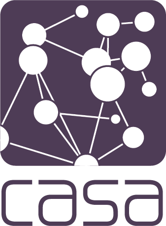

I hope to arm you with a range of:
… which will allow to you embark upon your degree knowing what you can do to achieve the best result you can!
The UCL Library Services Website is a very good place to start if you want to find books located in UCL www.ucl.ac.uk/library/.
UCL has lots of libraries – you will probably find most useful items in the UCL Science Library, the Bartlett Library or we have a small CASA library where you can borrow books.
Find academic articles using Google Scholar (scholar.google.com), it’s great! Much better than a standard google search for finding books, journal articles, working papers etc.
You can also link Google scholar to the UCL library, so if you find an article you might like to read Google will give you the UCL link to access it!
Web of Science is also an excellent search tool for finding academic articles. It will automatically link to items in the UCL catalogue as you need to log in via your institutional credentials.
The detail of the method you are using = where, how +why
Being able to write well is absolutely key to success.
If you are unable to present your argument well in English, your grades will suffer accordingly.
Poor quality of written English a contributing factor in failed CASA dissertations in the past.
There are a number of factors which could lead to poor written work, but fortunately there are solutions to all of them…
If English isn’t your first language the UCL Centre For Languages & International Education has taught courses which run during the term (www.ucl.ac.uk/languages-international-education) and there are also mobile apps (www.ucl.ac.uk/english-usage/apps/)
Also, the Writing Lab (www.ucl.ac.uk/writing-lab/)!
Developed through the programme and modules.
Other resources:
MOOCs are available elsewhere:
You have 10 minutes to read through the two introductions provided1 and answer these questions:
Read the hand-outs.
Variety of academic referencing styles, but we prefer Harvard referencing:
Reference management software is BRILLIANT so use it!
Zotero is FREE and works across multiple platforms.
Add citations to your library with ONE CLICK from your (Firefox or Chrome) browser.
Will automatically detect whether a journal article, book, webpage etc.
Citations can be imported straight into Microsoft Word / Google docs / Markdown using a ‘plugin’.
Zotero will then build your alphabetical reference list at the end according to the style you choose!
Your personal reference ‘library’ is stored online and locally on your computer (and synced) so you can access from anywhere. Free backups!
Other reference management software such as EndNote is available (EndNote is good, but quite pricey…)
** Big hint #1 – DOWNLOAD ZOTERO TODAY AND PRACTICE USING IT – IT WILL MAKE YOUR LIFE ABOUT 300% BETTER**
See my last point on Zotero to help with this!
.zip files in attempt to avoid their work going through Turnitin, but all work goes through Turnitin.Many cases of plagiarism are accidental, but this is not an excuse.
You must all complete the referencing and plagiarism quiz on Moodle. We will log all people who have and haven’t completed and will chase you if you don’t complete it.
Log onto the CASA page (where these slides will be along with other induction week materials) and complete the short quiz.
If in doubt, ask.
We Promise You An ‘A’! Promise!
We recognise that there are many reasons students might plagiarise or cheat, for example:
Talk to the staff (your personal tutor, the departmental tutor, the module leader, anyone) if you are facing issues that could be affecting your studies.

How to Succeed • Andy Maclachlan & Jon Reades